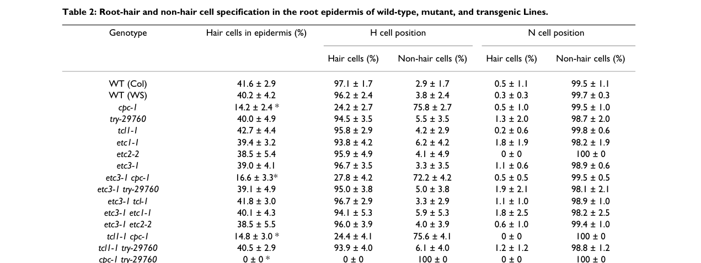

TRIPTYCHON (TRY) is a small (106 aa) nuclear, cell-to-cell mobile R3-type MYB protein of Arabidopsis that lacks an R2 repeat and a recognizable transcriptional activation domain. TRY is a negative regulator of epidermal cell fate in the lateral-inhibition circuit of trichome patterning: its transcription is activated in incipient trichome cells by the GL1-GL3/EGL3-TTG1 (MBW) activator complex, and the TRY protein binds the bHLH proteins GL3/EGL3 and competes with the R2R3-MYB activator GL1, preventing formation of active MBW complexes. try mutants form trichome clusters and over-branched trichomes, and try cpc double mutants form large trichome clusters, showing that TRY and its paralog CAPRICE (CPC) suppress trichome fate in cells neighboring a developing trichome. TRY also acts redundantly with CPC and other R3 MYBs (ETC1-3, TCL1) to promote root hair cell fate in the root epidermis and represses its own promoter in a negative feedback loop.
| GO Term | Evidence | Action | Reason |
|---|---|---|---|
|
GO:0000976
transcription cis-regulatory region binding
|
IBA
GO_REF:0000033 |
KEEP AS NON CORE |
Summary: IBA cis-regulatory region binding from the deep MYB-domain node shared with R2R3 MYBs.
Reason: TRY retains only the R3 repeat (no R2) and lacks an activation domain; its established in planta mechanism is binding GL3/EGL3 and competing with GL1, not sequence-specific promoter binding. A high-throughput yeast one-hybrid screen did, however, record TRY binding to a promoter fragment, so DNA-binding capacity is not excluded. Retained as non-core pending direct evidence for in vivo TRY DNA binding.
Propagation Review
Root cause:
NO FAILURE NON CORE
Sources checked:
PANTHER:PTN000067606
· PTN000067606
SUPPORTS TRANSFER
Same deep MYB node that gives CPC this term (marked over-annotated there on the same R3-only structural argument). The node is seeded by R2R3 MYBs (AT5G40330, AT1G66230) and by TRY itself (AT5G53200, via its own yeast one-hybrid IPI), and that target-specific datum is what keeps the transfer defensible as non-core for TRY but not for CPC.
Supporting Evidence:
PMID:12356720
We show that the TRIPTYCHON gene that functions in lateral inhibition encodes a single-repeat MYB-related transcription factor that lacks a recognizable activation domain.
PMID:25533953
The final network comprises 242 genes and 617 protein-DNA interactions
|
|
GO:0000976
transcription cis-regulatory region binding
|
IPI
PMID:25533953 An Arabidopsis gene regulatory network for secondary cell wa... |
KEEP AS NON CORE |
Summary: Yeast one-hybrid: TRY bound the promoter of AT4G36890 (IRX14) in a secondary cell wall gene regulatory network screen.
Reason: Direct experimental but high-throughput heterologous evidence (bait fused to an activation domain in yeast); no follow-up indicates that TRY regulates secondary cell wall genes in planta. Kept as a non-core experimental observation.
Supporting Evidence:
PMID:25533953
The final network comprises 242 genes and 617 protein-DNA interactions
|
|
GO:0003700
DNA-binding transcription factor activity
|
ISS
PMID:11118137 Arabidopsis transcription factors: genome-wide comparative a... |
MODIFY |
Summary: ISS DNA-binding transcription factor activity from the genome-wide TF survey (MYB-like domain).
Reason: TRY lacks an activation domain and functions by binding the bHLH proteins GL3/EGL3 and preventing formation of the active GL1-GL3 complex. The informative activity is inhibition of a transcription regulator by direct binding, not sequence-specific DNA-binding TF activity.
Proposed replacements:
transcription regulator inhibitor activity
Supporting Evidence:
PMID:12356720
We show that the TRIPTYCHON gene that functions in lateral inhibition encodes a single-repeat MYB-related transcription factor that lacks a recognizable activation domain.
PMID:14561633
TRY has the ability to prevent the GL1 GL3 interaction
PMID:18766177
These inhibitors can compete with the R2R3 MYB factor for binding to GL3/EGL3 in yeast three-hybrid assays
file:ARATH/TRY/TRY-deep-research-falcon.md
a MYB-domain annotation alone does not establish direct DNA binding by TRY
|
|
GO:0005515
protein binding
|
IPI
PMID:28650476 CrY2H-seq: a massively multiplexed assay for deep-coverage i... |
REMOVE |
Summary: CrY2H-seq high-throughput interaction with a homeodomain-like protein (At4g03250).
Reason: Uninformative protein binding from a massively multiplexed Y2H screen with no functional follow-up. Removal does not assert that the interaction is false; TRY's informative partner binding (GL3/EGL3) is captured by transcription regulator inhibitor activity.
Supporting Evidence:
PMID:28650476
identify these interactions en masse
|
|
GO:0005515
protein binding
|
IPI
PMID:28650476 CrY2H-seq: a massively multiplexed assay for deep-coverage i... |
REMOVE |
Summary: CrY2H-seq high-throughput interaction with bZIP43.
Reason: Uninformative protein binding from a massively multiplexed Y2H screen with no functional follow-up. Removal does not assert that the interaction is false.
Supporting Evidence:
PMID:28650476
identify these interactions en masse
|
|
GO:0005634
nucleus
|
IBA
GO_REF:0000033 |
ACCEPT |
Summary: IBA nucleus.
Reason: Functional GFP-TRY localizes to trichome nuclei.
Supporting Evidence:
PMID:14561633
Analysis of plants expressing functional GFP-tagged versions of GL1, GL3 and TRY show that the proteins are localized in trichome nuclei.
|
|
GO:0005634
nucleus
|
IEA
GO_REF:0000044 |
ACCEPT |
Summary: IEA nucleus from UniProt subcellular location.
Reason: Consistent with experimental localization.
Supporting Evidence:
PMID:14561633
Analysis of plants expressing functional GFP-tagged versions of GL1, GL3 and TRY show that the proteins are localized in trichome nuclei.
|
|
GO:0005634
nucleus
|
ISM
GO_REF:0000122 |
ACCEPT |
Summary: ISM (AtSubP) nucleus.
Reason: Consistent with experimental localization.
Supporting Evidence:
PMID:14561633
Analysis of plants expressing functional GFP-tagged versions of GL1, GL3 and TRY show that the proteins are localized in trichome nuclei.
|
|
GO:0006355
regulation of DNA-templated transcription
|
IBA
GO_REF:0000033 |
ACCEPT |
Summary: IBA regulation of DNA-templated transcription.
Reason: TRY regulates transcription indirectly by inhibiting the MBW activator complex; it represses its own promoter and MBW target activation. The general process term is correct.
Supporting Evidence:
PMID:21951724
we demonstrate that TRY and CPC can suppress the TRY expression without the transcriptional down regulation of the activators
|
|
GO:0006355
regulation of DNA-templated transcription
|
IEA
GO_REF:0000117 |
ACCEPT |
Summary: IEA (ARBA) regulation of DNA-templated transcription.
Reason: As for the IBA row.
Supporting Evidence:
PMID:21951724
we demonstrate that TRY and CPC can suppress the TRY expression without the transcriptional down regulation of the activators
|
|
GO:0006355
regulation of DNA-templated transcription
|
TAS
PMID:11118137 Arabidopsis transcription factors: genome-wide comparative a... |
ACCEPT |
Summary: TAS regulation of DNA-templated transcription from the TF survey.
Reason: As for the IBA row.
Supporting Evidence:
PMID:21951724
we demonstrate that TRY and CPC can suppress the TRY expression without the transcriptional down regulation of the activators
|
|
GO:0010026
trichome differentiation
|
IBA
GO_REF:0000033 |
KEEP AS NON CORE |
Summary: IBA trichome differentiation.
Reason: TRY does not perform trichome differentiation; it restricts which epidermal cells adopt trichome fate (lateral inhibition). The patterning term captures its role better; kept as non-core because try mutants do alter trichome differentiation (clusters, extra branches).
Supporting Evidence:
PMID:12356720
Both genes are expressed in trichomes and act together during lateral inhibition.
|
|
GO:0010026
trichome differentiation
|
IEA
GO_REF:0000117 |
KEEP AS NON CORE |
Summary: IEA (ARBA) trichome differentiation.
Reason: As for the IBA row.
Supporting Evidence:
PMID:12356720
Both genes are expressed in trichomes and act together during lateral inhibition.
|
|
GO:0010091
trichome branching
|
IMP
PMID:10572032 Genetic control of trichome branch number in Arabidopsis: th... |
KEEP AS NON CORE |
Summary: IMP trichome branching: try is one of the branch-number mutants used in epistasis with FURCA loci.
Reason: try trichomes are over-branched, consistent with TRY limiting trichome developmental programs; this is a downstream morphogenetic consequence rather than TRY's core patterning role.
Supporting Evidence:
PMID:10572032
Based on the analysis of both epistatic and additive genetic interactions between the FURCA genes and other genes that control trichome branch number
|
|
GO:0010154
fruit development
|
IMP
PMID:3793867 Cytotoxic and enterotoxic activities of Campylobacter jejuni... |
UNDECIDED |
Summary: The GOA reference PMID:3793867 is wrong; it is a Campylobacter jejuni plasmid study that does not concern TRY or Arabidopsis, so the fruit development row has no valid supporting evidence.
Reason: The cited identifier resolves to an unrelated bacterial paper (correctness WRONG_IDENTIFIER; the same erroneous PMID is attached to a GL1 fruit development row, which is likewise UNDECIDED). A citation error does not refute a biological phenotype, and the curator's intended plant reference cannot be recovered, so the row is left UNDECIDED rather than judged; no replacement PMID is guessed. For whoever recovers the source, the only fruit-related TRY biology known is suppression of trichome formation on siliques by redundant R3 MYBs, which would be epidermal trichome patterning on the fruit surface rather than fruit development.
Supporting Evidence:
PMID:3793867
The 45-kilobase tetracycline resistance plasmids pMAK175 and pUA466 from Campylobacter jejuni were examined using curing and mating experiments.
PMID:18644155
single-repeat R3 MYBs normally suppress trichome formation on siliques and cotyledons
|
|
GO:0048765
root hair cell differentiation
|
IBA
GO_REF:0000033 |
KEEP AS NON CORE |
Summary: IBA root hair cell differentiation (seeded by ETC2).
Reason: TRY acts redundantly with CPC in root epidermal patterning, promoting hair cell fate; a real but secondary role outside the leaf trichome module.
Supporting Evidence:
PMID:12356720
We further show that TRIPTYCHON and CAPRICE act redundantly in the position-dependent cell fate determination in the root epidermis.
|
|
GO:1900032
regulation of trichome patterning
|
IEA
GO_REF:0000117 |
ACCEPT |
Summary: IEA (ARBA) regulation of trichome patterning.
Reason: TRY is a central inhibitor in trichome spacing.
Supporting Evidence:
PMID:12356720
Both genes are expressed in trichomes and act together during lateral inhibition.
|
|
GO:1900032
regulation of trichome patterning
|
IMP
PMID:21951724 Role of TRIPTYCHON in trichome patterning in Arabidopsis. |
ACCEPT |
Summary: IMP: TRY promoter/CDS swap and feedback analyses establish TRY's specific role in trichome patterning.
Reason: Direct experimental support for TRY in trichome patterning (cluster suppression and density).
Supporting Evidence:
PMID:21951724
Among the inhibitors TRIPTYCHON (TRY) seems to fulfill a special function. Its corresponding mutants produce trichome clusters whereas all other inhibitors are involved in trichome density regulation.
|
Q: Does TRY inhibit the MBW complex only by sequestering GL3/EGL3 away from GL1, or do TRY-GL3-TTG1 complexes also occupy target promoters as inactive complexes?
Q: What TRY-specific protein properties (absent from CPC) explain why only try mutants form trichome clusters?
Experiment: Quantify TRY-GFP mobility and nuclear trapping in young leaf epidermis by photoconversion in wild type versus gl3 egl3 backgrounds.
Hypothesis: TRY accumulation in cells neighbouring a trichome depends on GL3/EGL3-mediated nuclear retention.
Type: Live imaging / photoconvertible fusion
The research report should be a detailed narrative explaining the function, biological processes, and localization of the gene product. Citations should be given for all claims.
You should prioritize authoritative reviews and primary scientific literature when conducting research. You can supplement
this with annotations you find in gene/protein databases, but these can be outdated or inaccurate.
We are specifically interested in the primary function of the gene - for enzymes, what reaction is catalyzed, and what is the substrate specificity? For transporters, what is the substrate? For structural proteins or adapters, what is the broader structural role? For signaling molecules, what is the role in the pathway.
We are interested in where in or outside the cell the gene product carries out its function.
We are also interested in the signaling or biochemical pathways in which the gene functions. We are less interested in broad pleiotropic effects, except where these elucidate the precise role.
Include evidence where possible. We are interested in both experimental evidence as well as inference from structure, evolution, or bioinformatic analysis. Precise studies should be prioritized over high-throughput, where available.
TRY is TRIPTYCHON, the Arabidopsis thaliana gene At5g53200. Fine mapping of a natural fruit-trichome locus explicitly identified TRY (At5g53200); the target accession Q8GV05 is the UniProt identifier supplied in the question, rather than an accession independently established by that mapping study. The literature identifies TRY as a small single-repeat R3 MYB regulatory protein, consistent with the supplied Myb_DNA-binding, SANT/Myb and Myb_TF_plants annotations. The broader homeodomain-like superfamily label should not be interpreted as evidence that TRY is the homeodomain protein GLABRA2 (GL2): GL2 is a distinct, downstream regulator. (arteaga2021mybtranscriptionfactors pages 9-9, wang2008comprehensiveanalysisof pages 1-2, wang2014regulationofcell pages 2-3)
TRY’s best-established function is lateral inhibition of trichome initiation: it helps prevent neighboring shoot epidermal cells from adopting trichome fate, thereby maintaining trichome spacing. In roots, it contributes—largely redundantly with CAPRICE (CPC)—to specification of hair-forming epidermal cells. TRY is not an enzyme or substrate transporter; its relevant molecular partners are transcriptional regulators, particularly the bHLH protein GLABRA3 (GL3). Single-repeat R3 MYBs are short proteins composed largely of one MYB repeat and lack the conventional intrinsic transcription-activation region, so a MYB-domain annotation alone does not establish direct DNA binding by TRY. (pesch2011roleoftriptychon pages 1-2, wang2008comprehensiveanalysisof pages 5-6, wang2008comprehensiveanalysisof pages 1-2, wang2014regulationofcell pages 2-3)
In the shoot epidermis, GL1–GL3/EGL3–TTG1, a MYB–bHLH–WD40 regulatory complex, promotes trichome fate, including activation of GL2. TRY associates with GL3 and can compete with GL1 for the GL3 interaction, reducing the activity of the trichome-promoting network. TRY–GL3 interaction has been observed in Arabidopsis protoplast protein-interaction assays and in bimolecular-fluorescence-complementation experiments; yeast three-hybrid assays demonstrate interference with GL1–GL3 interaction. In the latter assay, competitive effectiveness ranked CPC > ETC1 > TRY > ETC3 > ETC2. That ranking is assay-specific, not a measurement of in-planta binding constants. Direct binding of TRY itself to the GL2 promoter has not been established by these results. (wang2008comprehensiveanalysisof pages 5-6, wester2009functionaldiversityof pages 6-7, wang2014regulationofcell pages 2-3)
This inhibition is embedded in feedback: combinations of GL1 or the root MYB WER with GL3 or EGL3 activate TRY transcription in protoplast assays, while TRY or CPC can suppress activator-induced TRY-promoter expression without first decreasing activator transcription. Reciprocal TRY/CPC promoter-and-coding-sequence swaps provide particularly strong functional evidence: either promoter driving the TRY protein rescued try trichome clustering, whereas the TRY promoter driving CPC did not. Thus, preventing clusters depends on TRY-specific protein properties, not simply where the gene is transcribed. (wang2008comprehensiveanalysisof pages 1-2, pesch2011roleoftriptychon pages 1-2, pesch2011roleoftriptychon pages 6-7)
Developmental timing provides a second input. SPL9, regulated by miR156, increases TRY expression during reproductive development: induced SPL9 rapidly increased TRY transcripts, mutating SPL-binding elements weakened TRY-promoter activity in stems and flowers, and SPL9 chromatin immunoprecipitation enriched TRY promoter fragments. This is evidence of SPL9 binding the TRY gene’s promoter, not evidence that TRY binds DNA directly. In the root, the analogous WER–GL3/EGL3–TTG1 pathway promotes the non-hair program through GL2; competing R3 MYBs, including TRY, favor hair-cell specification. (yu2010temporalcontrolof pages 6-8, yu2010temporalcontrolof pages 1-2, wang2008comprehensiveanalysisof pages 5-6)
TRY acts in the developing epidermis, notably in young leaves where trichome positions are selected, and participates in trichome regulation in reproductive organs. A distinctive try loss-of-function phenotype is adjacent or aggregated leaf trichomes, rather than merely a uniform increase in hair density; one study also reported fewer total leaf trichomes in try mutants. TRY’s root role is easier to see when CPC is absent. In the root-epidermis assay of Wang and colleagues, the fraction of hair cells was 41.6 ± 2.9% in wild-type Columbia, 40.0 ± 4.9% in try-29760, 14.2 ± 2.4% in cpc-1, and 0 ± 0% in cpc-1 try-29760; values are mean ± SD from at least ten roots per genotype. Thus CPC has the larger detectable single-mutant effect, but TRY is essential to the residual hair-forming capacity in that double-mutant background. (pesch2011roleoftriptychon pages 1-2, wang2008comprehensiveanalysisof pages 5-6, wang2008comprehensiveanalysisof media 2985fae2)
Where the protein acts within and between cells: its interaction with GL3 and its effect on transcriptional-complex function support a nuclear regulatory role. A transient Arabidopsis cotyledon-epidermis experiment detected overexpressed EYFP–TRY in both cytoplasm and nucleus, including nuclei of neighboring cells lacking the cell-autonomous cotransfection marker; this supports an ability of tagged TRY to move between epidermal cells. However, that direct TRY-localization experiment comes from a 2004 thesis, rather than an endogenous-protein localization study in a peer-reviewed article. Peer-reviewed mobility measurements for related proteins CPC and ETC3 support the family-level model, but should not be substituted for a quantitative measurement of native TRY trafficking from a trichome initial. Neither secretion outside the plant cell nor a specific TRY transport route was established by the retrieved evidence. (srinivas2004understandingthefunction pages 60-65, wester2009functionaldiversityof pages 6-7, arteaga2021mybtranscriptionfactors pages 11-12)
The following evidence table distinguishes observations from interpretations and gives the underlying publication dates and links. The cropped source image of the root-hair phenotype table was also checked against its transcribed values. (wang2008comprehensiveanalysisof pages 5-6, wang2008comprehensiveanalysisof media 2985fae2)
| Function / claim | Direct experimental observation | Inference / limitation | Study URL / publication date |
|---|---|---|---|
| Identity: Arabidopsis thaliana TRY / TRIPTYCHON, locus At5g53200 | Fine mapping placed MAU5 in a 3.5-kb interval containing only TRY (At5g53200); the locus encodes an R3-MYB negative regulator of trichome development. This matches the supplied UniProt Q8GV05 identity. (arteaga2021mybtranscriptionfactors pages 9-9) | This evidence verifies the gene symbol, locus, organism and protein class; it excludes unrelated genes with similar names. | Arteaga et al., The Plant Cell, advance publication 2021-01-04 |
| Primary molecular mechanism: TRY binds the bHLH factor GL3 and disrupts the GL1–GL3 activator interaction | Arabidopsis protoplast two-hybrid assays demonstrated TRY–GL3 interaction. Yeast two-/three-hybrid and BiFC assays independently supported GL3 binding and ranked inhibition of GL1–GL3 interaction as CPC > ETC1 > TRY > ETC3 > ETC2. (wang2008comprehensiveanalysisof pages 5-6, wester2009functionaldiversityof pages 6-7) | Supports protein–protein competition within the MBW patterning network. TRY lacks an intrinsic activation domain; these experiments do not show direct TRY binding to DNA or establish a binding affinity. (wang2008comprehensiveanalysisof pages 6-9) | Wang et al., BMC Plant Biology, 2008-07-21; Wester et al., Development, 2009-05 |
| Leaf trichome spacing: TRY specifically prevents adjacent trichomes from forming clusters | Loss-of-function try plants produced trichome clusters and fewer trichomes. Reciprocal TRY/CPC promoter–CDS swaps showed that either promoter driving the TRY coding sequence completely rescued clustering, whereas the TRY promoter driving CPC did not. (pesch2011roleoftriptychon pages 1-2, pesch2011roleoftriptychon pages 6-7) | Demonstrates that TRY-specific protein properties—not merely its expression pattern—underlie cluster prevention. The precise biochemical feature distinguishing TRY from CPC remains unresolved. | Pesch & Hülskamp, BMC Plant Biology, 2011-09 |
| Root-hair specification: TRY acts redundantly with CPC to promote hair-cell fate | Epidermal hair cells were 41.6 ± 2.9% in wild type, 40.0 ± 4.9% in try, 14.2 ± 2.4% in cpc, and 0 ± 0% in the cpc try double mutant; values are mean ± SD from at least 10 roots per genotype. (wang2008comprehensiveanalysisof pages 5-6, wang2008comprehensiveanalysisof media 2985fae2) | TRY alone has little detectable effect in this assay, but the double-mutant result establishes strong redundancy with CPC. It does not imply that TRY is the predominant root-hair regulator. | Wang et al., BMC Plant Biology, 2008-07-21 |
| Subcellular localization and mobility: TRY can occupy the cytoplasm and nucleus and move into neighboring epidermal cells | In transient cotyledon bombardment, 35S:EYFP–TRY was detected in the nucleus and cytoplasm of the transfected cell and in nuclei of neighboring cells lacking the cell-autonomous cotransfection marker. (srinivas2004understandingthefunction pages 60-65) | Direct for the tagged, overexpressed fusion, but reported in an unpublished 2004 thesis, not a peer-reviewed endogenous-locus study. It does not prove native TRY movement from trichome initials or identify plasmodesmata as the route. | Srinivas, doctoral thesis, 2004; no verified journal URL available |
| Natural cis-regulatory variation: the Don-0 TRY allele is hypomorphic in reproductive organs | Don-0 and Ler lacked TRY missense differences, but Don-0 had lower TRY expression. Genomic transgenes complemented leaf clustering, while Don-0 versus Ler alleles differed in fruit trichome number (P = 0.008). Intronic SNP-701 gave the strongest association with fruit trichomes (−log₁₀P = 11.0) and was in strong linkage disequilibrium with seven variants. (arteaga2021mybtranscriptionfactors pages 9-10, arteaga2021mybtranscriptionfactors pages 9-9) | Supports cis-regulatory TRY hypofunction, but SNP-701 is a marker within a linked haplotype; it was not individually proven causal. TRY expression is also affected by genetic background and TCL1-associated trans-regulation. | Arteaga et al., The Plant Cell, advance publication 2021-01-04 |
| Recent development: TRY participates in epistatic control of natural fruit-trichome variation with EGL3, GL1 and TCL1 | Hairy-fruit introgression lines required the Don-0 TRY region together with other network alleles. The interactions MAU1/EGL3 × GL1 × TRY and MAU1/EGL3 × TCL1 × TRY explained 21.2% and 12.3% of fruit-trichome-number variance, respectively. (mendezvigo2025thebhlhtranscription pages 2-3) | Establishes network-level genetic epistasis, not a newly measured TRY–EGL3 biochemical interaction. The adaptive significance of fruit trichomes remains suggested rather than experimentally demonstrated. | Méndez-Vigo et al., Plant Physiology, advance publication 2024-12-22; volume issue 2025 |
Table: Evidence-grade summary for Arabidopsis thaliana TRY/At5g53200, separating direct observations from mechanistic inference and unresolved limitations. It includes molecular, localization, developmental, natural-variation and recent epistasis evidence.
Natural variation supplies evidence for TRY function beyond laboratory mutants. Arteaga et al., published online 4 January 2021, mapped the fruit-trichome locus MAU5 to TRY. Don-0 and Ler TRY alleles differed in reproductive-organ expression but not in amino-acid-altering substitutions; transgenic genomic alleles differed in fruit-trichome effects (P = 0.008). An intronic variant termed SNP-701 had a strong association with fruit trichomes (−log₁₀P = 11.0), but it is linked to seven other polymorphisms and was not individually proved causal. These results support reduced TRY expression as a contributor to the Don-0 fruit-hair phenotype, while showing that genetic background and TCL1-associated regulation also matter. (arteaga2021mybtranscriptionfactors pages 9-9)
The most relevant 2024 advance located was Méndez-Vigo et al., published online 22 December 2024 and assigned to a 2025 Plant Physiology issue. It identified a hyperactive natural EGL3 allele whose effects on fruit trichomes depend strongly on the TRY, TCL1 and GL1 genetic background. In the tested introgression lines, the EGL3 × GL1 × TRY and EGL3 × TCL1 × TRY interactions accounted for 21.2% and 12.3%, respectively, of variation in fruit trichome number; the EGL3 × TRY interaction accounted for 14.6%. These are statistical contributions in that study’s genetic backgrounds, not evidence of a newly demonstrated TRY–EGL3 physical interaction. (mendezvigo2025thebhlhtranscription pages 1-2, mendezvigo2025thebhlhtranscription pages 2-3)
Current implementation is principally experimental: try mutants, complementation constructs, promoter reporters and natural-allele introgression lines are used to dissect plant epidermal fate and engineer or test trichome patterns in Arabidopsis. Hairy fruits in the sampled Iberian relict populations were associated with lower spring precipitation, suggesting a possible adaptive role, but association does not establish that manipulating TRY improves drought tolerance or crop yield. Likewise, transcript profiling implicates TRY alongside other R3 MYBs in root responses to phosphate scarcity, yet the proposed downstream metabolic mechanisms remain less securely established than its trichome-spacing and root-hair-fate functions. The available 2023–2024 search did not yield a stronger, TRY-specific biochemical or native-localization study that would supersede these primary functional experiments. (arteaga2021mybtranscriptionfactors pages 1-2, chen2015theparalogousr3 pages 1-2, chen2015theparalogousr3 pages 12-13, mendezvigo2025thebhlhtranscription pages 1-2)
References
(arteaga2021mybtranscriptionfactors pages 9-9): Noelia Arteaga, Marija Savic, Belén Méndez-Vigo, Alberto Fuster-Pons, Rafael Torres-Pérez, Juan Carlos Oliveros, F Xavier Picó, and Carlos Alonso-Blanco. Myb transcription factors drive evolutionary innovations in arabidopsis fruit trichome patterning. The Plant Cell, 33:548-565, Jan 2021. URL: https://doi.org/10.1093/plcell/koaa041, doi:10.1093/plcell/koaa041. This article has 34 citations.
(wang2008comprehensiveanalysisof pages 1-2): Shucai Wang, Leah Hubbard, Ying Chang, Jianjun Guo, John Schiefelbein, and Jin-Gui Chen. Comprehensive analysis of single-repeat r3 myb proteins in epidermal cell patterning and their transcriptional regulation in arabidopsis. BMC Plant Biology, 8:81-81, Jul 2008. URL: https://doi.org/10.1186/1471-2229-8-81, doi:10.1186/1471-2229-8-81. This article has 153 citations and is from a peer-reviewed journal.
(wang2014regulationofcell pages 2-3): Shucai Wang and Jin-Gui Chen. Regulation of cell fate determination by single-repeat r3 myb transcription factors in arabidopsis. Frontiers in Plant Science, Apr 2014. URL: https://doi.org/10.3389/fpls.2014.00133, doi:10.3389/fpls.2014.00133. This article has 135 citations.
(pesch2011roleoftriptychon pages 1-2): Martina Pesch and Martin Hülskamp. Role of triptychon in trichome patterning in arabidopsis. BMC Plant Biology, 11:130-130, Sep 2011. URL: https://doi.org/10.1186/1471-2229-11-130, doi:10.1186/1471-2229-11-130. This article has 57 citations and is from a peer-reviewed journal.
(wang2008comprehensiveanalysisof pages 5-6): Shucai Wang, Leah Hubbard, Ying Chang, Jianjun Guo, John Schiefelbein, and Jin-Gui Chen. Comprehensive analysis of single-repeat r3 myb proteins in epidermal cell patterning and their transcriptional regulation in arabidopsis. BMC Plant Biology, 8:81-81, Jul 2008. URL: https://doi.org/10.1186/1471-2229-8-81, doi:10.1186/1471-2229-8-81. This article has 153 citations and is from a peer-reviewed journal.
(wester2009functionaldiversityof pages 6-7): Katja Wester, Simona Digiuni, Florian Geier, Jens Timmer, Christian Fleck, and Martin Hülskamp. Functional diversity of r3 single-repeat genes in trichome development. Development, 136:1487-1496, May 2009. URL: https://doi.org/10.1242/dev.021733, doi:10.1242/dev.021733. This article has 195 citations and is from a domain leading peer-reviewed journal.
(pesch2011roleoftriptychon pages 6-7): Martina Pesch and Martin Hülskamp. Role of triptychon in trichome patterning in arabidopsis. BMC Plant Biology, 11:130-130, Sep 2011. URL: https://doi.org/10.1186/1471-2229-11-130, doi:10.1186/1471-2229-11-130. This article has 57 citations and is from a peer-reviewed journal.
(yu2010temporalcontrolof pages 6-8): N. Yu, Wenjuan Cai, Shucai Wang, Chun-Min Shan, Ling-Jian Wang, and Xiao-Ya Chen. Temporal control of trichome distribution by microrna156-targeted spl genes in arabidopsis thaliana[w][oa]. Plant Cell, 22:2322-2335, Jul 2010. URL: https://doi.org/10.1105/tpc.109.072579, doi:10.1105/tpc.109.072579. This article has 401 citations and is from a highest quality peer-reviewed journal.
(yu2010temporalcontrolof pages 1-2): N. Yu, Wenjuan Cai, Shucai Wang, Chun-Min Shan, Ling-Jian Wang, and Xiao-Ya Chen. Temporal control of trichome distribution by microrna156-targeted spl genes in arabidopsis thaliana[w][oa]. Plant Cell, 22:2322-2335, Jul 2010. URL: https://doi.org/10.1105/tpc.109.072579, doi:10.1105/tpc.109.072579. This article has 401 citations and is from a highest quality peer-reviewed journal.
(wang2008comprehensiveanalysisof media 2985fae2): Shucai Wang, Leah Hubbard, Ying Chang, Jianjun Guo, John Schiefelbein, and Jin-Gui Chen. Comprehensive analysis of single-repeat r3 myb proteins in epidermal cell patterning and their transcriptional regulation in arabidopsis. BMC Plant Biology, 8:81-81, Jul 2008. URL: https://doi.org/10.1186/1471-2229-8-81, doi:10.1186/1471-2229-8-81. This article has 153 citations and is from a peer-reviewed journal.
(srinivas2004understandingthefunction pages 60-65): BP Srinivas. Understanding the function of the arabidopsis glabra 2 gene in trichome patterning, morphogenesis and differentiation. Unknown journal, 2004.
(arteaga2021mybtranscriptionfactors pages 11-12): Noelia Arteaga, Marija Savic, Belén Méndez-Vigo, Alberto Fuster-Pons, Rafael Torres-Pérez, Juan Carlos Oliveros, F Xavier Picó, and Carlos Alonso-Blanco. Myb transcription factors drive evolutionary innovations in arabidopsis fruit trichome patterning. The Plant Cell, 33:548-565, Jan 2021. URL: https://doi.org/10.1093/plcell/koaa041, doi:10.1093/plcell/koaa041. This article has 34 citations.
(wang2008comprehensiveanalysisof pages 6-9): Shucai Wang, Leah Hubbard, Ying Chang, Jianjun Guo, John Schiefelbein, and Jin-Gui Chen. Comprehensive analysis of single-repeat r3 myb proteins in epidermal cell patterning and their transcriptional regulation in arabidopsis. BMC Plant Biology, 8:81-81, Jul 2008. URL: https://doi.org/10.1186/1471-2229-8-81, doi:10.1186/1471-2229-8-81. This article has 153 citations and is from a peer-reviewed journal.
(arteaga2021mybtranscriptionfactors pages 9-10): Noelia Arteaga, Marija Savic, Belén Méndez-Vigo, Alberto Fuster-Pons, Rafael Torres-Pérez, Juan Carlos Oliveros, F Xavier Picó, and Carlos Alonso-Blanco. Myb transcription factors drive evolutionary innovations in arabidopsis fruit trichome patterning. The Plant Cell, 33:548-565, Jan 2021. URL: https://doi.org/10.1093/plcell/koaa041, doi:10.1093/plcell/koaa041. This article has 34 citations.
(mendezvigo2025thebhlhtranscription pages 2-3): Belén Méndez-Vigo, Noelia Arteaga, Alba Murillo-Sánchez, Sonia Alba, and Carlos Alonso-Blanco. The bhlh transcription factor gene egl3 accounts for the natural diversity in arabidopsis fruit trichome pattern and morphology. Plant Physiology, Dec 2025. URL: https://doi.org/10.1093/plphys/kiae673, doi:10.1093/plphys/kiae673. This article has 9 citations and is from a highest quality peer-reviewed journal.
(mendezvigo2025thebhlhtranscription pages 1-2): Belén Méndez-Vigo, Noelia Arteaga, Alba Murillo-Sánchez, Sonia Alba, and Carlos Alonso-Blanco. The bhlh transcription factor gene egl3 accounts for the natural diversity in arabidopsis fruit trichome pattern and morphology. Plant Physiology, Dec 2025. URL: https://doi.org/10.1093/plphys/kiae673, doi:10.1093/plphys/kiae673. This article has 9 citations and is from a highest quality peer-reviewed journal.
(arteaga2021mybtranscriptionfactors pages 1-2): Noelia Arteaga, Marija Savic, Belén Méndez-Vigo, Alberto Fuster-Pons, Rafael Torres-Pérez, Juan Carlos Oliveros, F Xavier Picó, and Carlos Alonso-Blanco. Myb transcription factors drive evolutionary innovations in arabidopsis fruit trichome patterning. The Plant Cell, 33:548-565, Jan 2021. URL: https://doi.org/10.1093/plcell/koaa041, doi:10.1093/plcell/koaa041. This article has 34 citations.
(chen2015theparalogousr3 pages 1-2): Chun-Ying Chen and Wolfgang Schmidt. The paralogous r3 myb proteins caprice, triptychon and enhancer of try and cpc1 play pleiotropic and partly non-redundant roles in the phosphate starvation response of arabidopsis roots. Journal of Experimental Botany, 66:4821-4834, May 2015. URL: https://doi.org/10.1093/jxb/erv259, doi:10.1093/jxb/erv259. This article has 40 citations and is from a domain leading peer-reviewed journal.
(chen2015theparalogousr3 pages 12-13): Chun-Ying Chen and Wolfgang Schmidt. The paralogous r3 myb proteins caprice, triptychon and enhancer of try and cpc1 play pleiotropic and partly non-redundant roles in the phosphate starvation response of arabidopsis roots. Journal of Experimental Botany, 66:4821-4834, May 2015. URL: https://doi.org/10.1093/jxb/erv259, doi:10.1093/jxb/erv259. This article has 40 citations and is from a domain leading peer-reviewed journal.

id: Q8GV05
gene_symbol: TRY
product_type: PROTEIN
status: COMPLETE
taxon:
id: NCBITaxon:3702
label: Arabidopsis thaliana
description: 'TRIPTYCHON (TRY) is a small (106 aa) nuclear, cell-to-cell mobile R3-type MYB protein of
Arabidopsis that lacks an R2 repeat and a recognizable transcriptional activation domain. TRY is a negative
regulator of epidermal cell fate in the lateral-inhibition circuit of trichome patterning: its transcription
is activated in incipient trichome cells by the GL1-GL3/EGL3-TTG1 (MBW) activator complex, and the TRY
protein binds the bHLH proteins GL3/EGL3 and competes with the R2R3-MYB activator GL1, preventing formation
of active MBW complexes. try mutants form trichome clusters and over-branched trichomes, and try cpc
double mutants form large trichome clusters, showing that TRY and its paralog CAPRICE (CPC) suppress
trichome fate in cells neighboring a developing trichome. TRY also acts redundantly with CPC and other
R3 MYBs (ETC1-3, TCL1) to promote root hair cell fate in the root epidermis and represses its own promoter
in a negative feedback loop.'
existing_annotations:
- term:
id: GO:0000976
label: transcription cis-regulatory region binding
evidence_type: IBA
original_reference_id: GO_REF:0000033
qualifier: enables
supporting_entities:
- AGI_LocusCode:AT1G66230
- AGI_LocusCode:AT5G40330
- AGI_LocusCode:AT5G53200
- PANTHER:PTN000067606
review:
summary: IBA cis-regulatory region binding from the deep MYB-domain node shared with R2R3 MYBs.
action: KEEP_AS_NON_CORE
reason: TRY retains only the R3 repeat (no R2) and lacks an activation domain; its established in
planta mechanism is binding GL3/EGL3 and competing with GL1, not sequence-specific promoter binding.
A high-throughput yeast one-hybrid screen did, however, record TRY binding to a promoter fragment,
so DNA-binding capacity is not excluded. Retained as non-core pending direct evidence for in vivo
TRY DNA binding.
propagation_review:
root_cause: NO_FAILURE_NON_CORE
source_entities:
- source_id: PANTHER:PTN000067606
source_label: PTN000067606
source_status: SUPPORTS_TRANSFER
comment: Same deep MYB node that gives CPC this term (marked over-annotated there on the same R3-only
structural argument). The node is seeded by R2R3 MYBs (AT5G40330, AT1G66230) and by TRY itself
(AT5G53200, via its own yeast one-hybrid IPI), and that target-specific datum is what keeps the
transfer defensible as non-core for TRY but not for CPC.
supported_by:
- reference_id: PMID:12356720
supporting_text: We show that the TRIPTYCHON gene that functions in lateral inhibition encodes a
single-repeat MYB-related transcription factor that lacks a recognizable activation domain.
- reference_id: PMID:25533953
supporting_text: The final network comprises 242 genes and 617 protein-DNA interactions
- term:
id: GO:0000976
label: transcription cis-regulatory region binding
evidence_type: IPI
original_reference_id: PMID:25533953
qualifier: enables
supporting_entities:
- AGI_LocusCode:AT4G36890
review:
summary: 'Yeast one-hybrid: TRY bound the promoter of AT4G36890 (IRX14) in a secondary cell wall gene
regulatory network screen.'
action: KEEP_AS_NON_CORE
reason: Direct experimental but high-throughput heterologous evidence (bait fused to an activation
domain in yeast); no follow-up indicates that TRY regulates secondary cell wall genes in planta.
Kept as a non-core experimental observation.
supported_by:
- reference_id: PMID:25533953
supporting_text: The final network comprises 242 genes and 617 protein-DNA interactions
- term:
id: GO:0003700
label: DNA-binding transcription factor activity
evidence_type: ISS
original_reference_id: PMID:11118137
qualifier: enables
review:
summary: ISS DNA-binding transcription factor activity from the genome-wide TF survey (MYB-like domain).
action: MODIFY
reason: TRY lacks an activation domain and functions by binding the bHLH proteins GL3/EGL3 and preventing
formation of the active GL1-GL3 complex. The informative activity is inhibition of a transcription
regulator by direct binding, not sequence-specific DNA-binding TF activity.
proposed_replacement_terms:
- id: GO:0140416
label: transcription regulator inhibitor activity
supported_by:
- reference_id: PMID:12356720
supporting_text: We show that the TRIPTYCHON gene that functions in lateral inhibition encodes a
single-repeat MYB-related transcription factor that lacks a recognizable activation domain.
- reference_id: PMID:14561633
supporting_text: TRY has the ability to prevent the GL1 GL3 interaction
- reference_id: PMID:18766177
supporting_text: These inhibitors can compete with the R2R3 MYB factor for binding to GL3/EGL3 in
yeast three-hybrid assays
- reference_id: file:ARATH/TRY/TRY-deep-research-falcon.md
supporting_text: a MYB-domain annotation alone does not establish direct DNA binding by TRY
- term:
id: GO:0005515
label: protein binding
evidence_type: IPI
original_reference_id: PMID:28650476
qualifier: enables
supporting_entities:
- UniProtKB:F4JI72
review:
summary: CrY2H-seq high-throughput interaction with a homeodomain-like protein (At4g03250).
action: REMOVE
reason: Uninformative protein binding from a massively multiplexed Y2H screen with no functional follow-up.
Removal does not assert that the interaction is false; TRY's informative partner binding (GL3/EGL3)
is captured by transcription regulator inhibitor activity.
supported_by:
- reference_id: PMID:28650476
supporting_text: identify these interactions en masse
- term:
id: GO:0005515
label: protein binding
evidence_type: IPI
original_reference_id: PMID:28650476
qualifier: enables
supporting_entities:
- UniProtKB:Q9FMC2
review:
summary: CrY2H-seq high-throughput interaction with bZIP43.
action: REMOVE
reason: Uninformative protein binding from a massively multiplexed Y2H screen with no functional follow-up.
Removal does not assert that the interaction is false.
supported_by:
- reference_id: PMID:28650476
supporting_text: identify these interactions en masse
- term:
id: GO:0005634
label: nucleus
evidence_type: IBA
original_reference_id: GO_REF:0000033
qualifier: is_active_in
supporting_entities:
- AGI_LocusCode:AT1G01380
- AGI_LocusCode:AT1G66230
- AGI_LocusCode:AT2G30424
- AGI_LocusCode:AT2G30432
- AGI_LocusCode:AT2G46410
- AGI_LocusCode:AT5G14750
- AGI_LocusCode:AT5G35550
- AGI_LocusCode:AT5G40330
- AGI_LocusCode:AT5G52600
- PANTHER:PTN000067606
review:
summary: IBA nucleus.
action: ACCEPT
reason: Functional GFP-TRY localizes to trichome nuclei.
supported_by:
- reference_id: PMID:14561633
supporting_text: Analysis of plants expressing functional GFP-tagged versions of GL1, GL3 and TRY
show that the proteins are localized in trichome nuclei.
- term:
id: GO:0005634
label: nucleus
evidence_type: IEA
original_reference_id: GO_REF:0000044
qualifier: located_in
supporting_entities:
- UniProtKB-SubCell:SL-0191
review:
summary: IEA nucleus from UniProt subcellular location.
action: ACCEPT
reason: Consistent with experimental localization.
supported_by:
- reference_id: PMID:14561633
supporting_text: Analysis of plants expressing functional GFP-tagged versions of GL1, GL3 and TRY
show that the proteins are localized in trichome nuclei.
- term:
id: GO:0005634
label: nucleus
evidence_type: ISM
original_reference_id: GO_REF:0000122
qualifier: located_in
review:
summary: ISM (AtSubP) nucleus.
action: ACCEPT
reason: Consistent with experimental localization.
supported_by:
- reference_id: PMID:14561633
supporting_text: Analysis of plants expressing functional GFP-tagged versions of GL1, GL3 and TRY
show that the proteins are localized in trichome nuclei.
- term:
id: GO:0006355
label: regulation of DNA-templated transcription
evidence_type: IBA
original_reference_id: GO_REF:0000033
qualifier: involved_in
supporting_entities:
- AGI_LocusCode:AT1G66230
- AGI_LocusCode:AT2G30424
- AGI_LocusCode:AT2G30432
- AGI_LocusCode:AT5G14750
- AGI_LocusCode:AT5G52600
- PANTHER:PTN008726970
review:
summary: IBA regulation of DNA-templated transcription.
action: ACCEPT
reason: TRY regulates transcription indirectly by inhibiting the MBW activator complex; it represses
its own promoter and MBW target activation. The general process term is correct.
supported_by:
- reference_id: PMID:21951724
supporting_text: we demonstrate that TRY and CPC can suppress the TRY expression without the transcriptional
down regulation of the activators
- term:
id: GO:0006355
label: regulation of DNA-templated transcription
evidence_type: IEA
original_reference_id: GO_REF:0000117
qualifier: involved_in
supporting_entities:
- ARBA:ARBA00028138
review:
summary: IEA (ARBA) regulation of DNA-templated transcription.
action: ACCEPT
reason: As for the IBA row.
supported_by:
- reference_id: PMID:21951724
supporting_text: we demonstrate that TRY and CPC can suppress the TRY expression without the transcriptional
down regulation of the activators
- term:
id: GO:0006355
label: regulation of DNA-templated transcription
evidence_type: TAS
original_reference_id: PMID:11118137
qualifier: acts_upstream_of_or_within
review:
summary: TAS regulation of DNA-templated transcription from the TF survey.
action: ACCEPT
reason: As for the IBA row.
supported_by:
- reference_id: PMID:21951724
supporting_text: we demonstrate that TRY and CPC can suppress the TRY expression without the transcriptional
down regulation of the activators
- term:
id: GO:0010026
label: trichome differentiation
evidence_type: IBA
original_reference_id: GO_REF:0000033
qualifier: involved_in
supporting_entities:
- AGI_LocusCode:AT2G30420
- AGI_LocusCode:AT2G30424
- AGI_LocusCode:AT5G53200
- PANTHER:PTN008726998
review:
summary: IBA trichome differentiation.
action: KEEP_AS_NON_CORE
reason: TRY does not perform trichome differentiation; it restricts which epidermal cells adopt trichome
fate (lateral inhibition). The patterning term captures its role better; kept as non-core because
try mutants do alter trichome differentiation (clusters, extra branches).
supported_by:
- reference_id: PMID:12356720
supporting_text: Both genes are expressed in trichomes and act together during lateral inhibition.
- term:
id: GO:0010026
label: trichome differentiation
evidence_type: IEA
original_reference_id: GO_REF:0000117
qualifier: involved_in
supporting_entities:
- ARBA:ARBA00091409
review:
summary: IEA (ARBA) trichome differentiation.
action: KEEP_AS_NON_CORE
reason: As for the IBA row.
supported_by:
- reference_id: PMID:12356720
supporting_text: Both genes are expressed in trichomes and act together during lateral inhibition.
- term:
id: GO:0010091
label: trichome branching
evidence_type: IMP
original_reference_id: PMID:10572032
qualifier: acts_upstream_of_or_within
review:
summary: 'IMP trichome branching: try is one of the branch-number mutants used in epistasis with FURCA
loci.'
action: KEEP_AS_NON_CORE
reason: try trichomes are over-branched, consistent with TRY limiting trichome developmental programs;
this is a downstream morphogenetic consequence rather than TRY's core patterning role.
supported_by:
- reference_id: PMID:10572032
supporting_text: Based on the analysis of both epistatic and additive genetic interactions between
the FURCA genes and other genes that control trichome branch number
- term:
id: GO:0010154
label: fruit development
evidence_type: IMP
original_reference_id: PMID:3793867
qualifier: acts_upstream_of_or_within
review:
summary: The GOA reference PMID:3793867 is wrong; it is a Campylobacter jejuni plasmid study that
does not concern TRY or Arabidopsis, so the fruit development row has no valid supporting evidence.
action: UNDECIDED
reason: The cited identifier resolves to an unrelated bacterial paper (correctness WRONG_IDENTIFIER;
the same erroneous PMID is attached to a GL1 fruit development row, which is likewise UNDECIDED).
A citation error does not refute a biological phenotype, and the curator's intended plant reference
cannot be recovered, so the row is left UNDECIDED rather than judged; no replacement PMID is guessed.
For whoever recovers the source, the only fruit-related TRY biology known is suppression of trichome
formation on siliques by redundant R3 MYBs, which would be epidermal trichome patterning on the
fruit surface rather than fruit development.
supported_by:
- reference_id: PMID:3793867
supporting_text: The 45-kilobase tetracycline resistance plasmids pMAK175 and pUA466 from Campylobacter
jejuni were examined using curing and mating experiments.
- reference_id: PMID:18644155
supporting_text: single-repeat R3 MYBs normally suppress trichome formation on siliques and cotyledons
- term:
id: GO:0048765
label: root hair cell differentiation
evidence_type: IBA
original_reference_id: GO_REF:0000033
qualifier: involved_in
supporting_entities:
- AGI_LocusCode:AT2G30420
- PANTHER:PTN008726998
review:
summary: IBA root hair cell differentiation (seeded by ETC2).
action: KEEP_AS_NON_CORE
reason: TRY acts redundantly with CPC in root epidermal patterning, promoting hair cell fate; a real
but secondary role outside the leaf trichome module.
supported_by:
- reference_id: PMID:12356720
supporting_text: We further show that TRIPTYCHON and CAPRICE act redundantly in the position-dependent
cell fate determination in the root epidermis.
- term:
id: GO:1900032
label: regulation of trichome patterning
evidence_type: IEA
original_reference_id: GO_REF:0000117
qualifier: involved_in
supporting_entities:
- ARBA:ARBA00092511
review:
summary: IEA (ARBA) regulation of trichome patterning.
action: ACCEPT
reason: TRY is a central inhibitor in trichome spacing.
supported_by:
- reference_id: PMID:12356720
supporting_text: Both genes are expressed in trichomes and act together during lateral inhibition.
- term:
id: GO:1900032
label: regulation of trichome patterning
evidence_type: IMP
original_reference_id: PMID:21951724
qualifier: acts_upstream_of_or_within
review:
summary: 'IMP: TRY promoter/CDS swap and feedback analyses establish TRY''s specific role in trichome
patterning.'
action: ACCEPT
reason: Direct experimental support for TRY in trichome patterning (cluster suppression and density).
supported_by:
- reference_id: PMID:21951724
supporting_text: Among the inhibitors TRIPTYCHON (TRY) seems to fulfill a special function. Its
corresponding mutants produce trichome clusters whereas all other inhibitors are involved in trichome
density regulation.
references:
- id: GO_REF:0000033
title: Annotation inferences using phylogenetic trees
findings: []
- id: GO_REF:0000044
title: Gene Ontology annotation based on UniProtKB/Swiss-Prot Subcellular Location vocabulary mapping,
accompanied by conservative changes to GO terms applied by UniProt
findings: []
- id: GO_REF:0000117
title: Electronic Gene Ontology annotations created by ARBA machine learning models
findings: []
- id: GO_REF:0000122
title: AtSubP analysis
findings: []
- id: PMID:10572032
title: 'Genetic control of trichome branch number in Arabidopsis: the roles of the FURCA loci.'
findings: []
- id: PMID:11118137
title: 'Arabidopsis transcription factors: genome-wide comparative analysis among eukaryotes.'
findings: []
- id: PMID:21951724
title: Role of TRIPTYCHON in trichome patterning in Arabidopsis.
findings: []
- id: PMID:25533953
title: An Arabidopsis gene regulatory network for secondary cell wall synthesis.
findings: []
reference_review:
relevance: LOW
correctness: VERIFIED
review_notes: High-throughput Y1H network; TRY-promoter interaction only in supplementary data.
- id: PMID:28650476
title: 'CrY2H-seq: a massively multiplexed assay for deep-coverage interactome mapping.'
findings: []
reference_review:
relevance: LOW
correctness: VERIFIED
review_notes: High-throughput CrY2H-seq screen; TRY interactions not followed up.
- id: PMID:3793867
title: Cytotoxic and enterotoxic activities of Campylobacter jejuni are not specified by tetracycline
resistance plasmids pMAK175 and pUA466.
findings: []
reference_review:
relevance: NONE
correctness: WRONG_IDENTIFIER
review_notes: GOA cites this PMID for TRY (and GL1) fruit development, but it is a Campylobacter plasmid
paper. The intended Arabidopsis reference is unknown.
- id: PMID:12356720
title: TRIPTYCHON and CAPRICE mediate lateral inhibition during trichome and root hair patterning in
Arabidopsis.
findings: []
reference_review:
relevance: HIGH
correctness: VERIFIED
review_notes: Cloning of TRY; TRY/CPC lateral inhibition in trichome and root patterning (full text
cached).
- id: PMID:14561633
title: A contradictory GLABRA3 allele helps define gene interactions controlling trichome development
in Arabidopsis.
findings: []
reference_review:
relevance: HIGH
correctness: VERIFIED
review_notes: TRY blocks GL1-GL3 interaction in yeast; GFP-TRY nuclear localization.
- id: PMID:18766177
title: A competitive complex formation mechanism underlies trichome patterning on Arabidopsis leaves.
findings: []
reference_review:
relevance: HIGH
correctness: VERIFIED
review_notes: TRY transcriptionally activated by GL1/GL3; TRY and CPC move between cells.
- id: PMID:18547143
title: 'Two-dimensional patterning by a trapping/depletion mechanism: the role of TTG1 and GL3 in Arabidopsis
trichome formation.'
findings: []
- id: PMID:18644155
title: Comprehensive analysis of single-repeat R3 MYB proteins in epidermal cell patterning and their
transcriptional regulation in Arabidopsis.
findings: []
- id: PMID:38504903
title: Quantitative analysis of MBW complex formation in the context of trichome patterning.
findings: []
- id: PMID:10368181
title: 'Generation of a spacing pattern: the role of triptychon in trichome patterning in Arabidopsis.'
findings: []
- id: PMID:15063185
title: The ENHANCER OF TRY AND CPC1 gene acts redundantly with TRIPTYCHON and CAPRICE in trichome and
root hair cell patterning in Arabidopsis.
findings: []
- id: PMID:19247443
title: A systems approach reveals regulatory circuitry for Arabidopsis trichome initiation by the GL3
and GL1 selectors.
findings: []
- id: file:ARATH/TRY/TRY-deep-research-falcon.md
title: Falcon deep research for Arabidopsis TRY
findings: []
core_functions:
- description: Mobile single-repeat R3 MYB inhibitor of the trichome MBW complex. TRY is induced by GL1-GL3,
moves to neighbouring cells, binds GL3/EGL3 and competes with GL1, preventing active complex formation
and thereby suppressing trichome fate next to an incipient trichome (lateral inhibition).
molecular_function:
id: GO:0140416
label: transcription regulator inhibitor activity
directly_involved_in:
- id: GO:1900032
label: regulation of trichome patterning
locations:
- id: GO:0005634
label: nucleus
supported_by:
- reference_id: PMID:12356720
supporting_text: We show that the TRIPTYCHON gene that functions in lateral inhibition encodes a single-repeat
MYB-related transcription factor that lacks a recognizable activation domain.
- reference_id: PMID:12356720
supporting_text: Both genes are expressed in trichomes and act together during lateral inhibition.
- reference_id: PMID:14561633
supporting_text: TRY has the ability to prevent the GL1 GL3 interaction
- reference_id: PMID:18766177
supporting_text: TRIPTYCHON and CAPRICE but not GLABRA1 and GLABRA3 can move between cells
- reference_id: PMID:18644155
supporting_text: all single-repeat R3 MYBs examined interact with GL3
suggested_questions:
- question: Does TRY inhibit the MBW complex only by sequestering GL3/EGL3 away from GL1, or do TRY-GL3-TTG1
complexes also occupy target promoters as inactive complexes?
- question: What TRY-specific protein properties (absent from CPC) explain why only try mutants form trichome
clusters?
suggested_experiments:
- description: Quantify TRY-GFP mobility and nuclear trapping in young leaf epidermis by photoconversion
in wild type versus gl3 egl3 backgrounds.
experiment_type: Live imaging / photoconvertible fusion
hypothesis: TRY accumulation in cells neighbouring a trichome depends on GL3/EGL3-mediated nuclear retention.